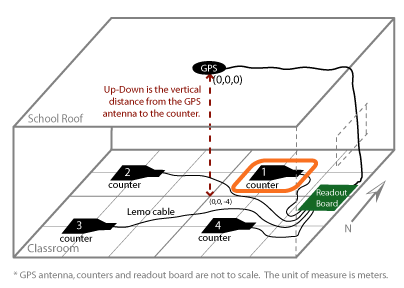
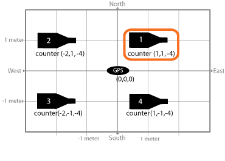
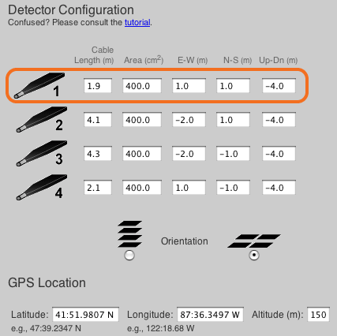

Many calculations rely on knowing the detector's location and arrangement. The geometry stores this information and should be uploaded with the data.
Here is a typical detector layout. The GPS unit is the 0,0,0 point of a coordinate system. In this example, the GPS unit is on the roof and the counters are inside the classroom.

The counters are arranged in this (x,y,z) coordinate system which our measurements refer to. Our example shows the plane containing the counters to be 4 meters below the plane containing the GPS.

Here is how the geometry is displayed.
